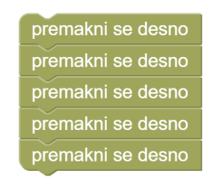
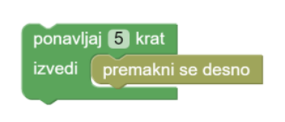

Nov dan, nove dogodivščine. Eva se je lepo poredila z malinami, ampak to ji ni dovolj. Njena lahkota je neustavljiva. Ponovno se odpravi na pot, po novo zalogo hrane. Na poti hitro zazna slastno jabolko, ki ga nemudoma hoče odnesti v skrivališče. Pomagaj Evi odnesti jabolko v skrivališče, pri tem si pomagaj s programskimi bloki, ki jih imaš na razpolago.
Sedaj že dodobra poznaš Evo in veš, da se je odpravila nazaj in našla še eno jabolko. Pomagaj Evi odnesti tudi ta sadež v skrivališče, pri tem si pomagaj s programskimi bloki, ki jih imaš na razpolago.
Pametna gosenica Eva ne verjame v naključje, da so bila jabolka, kar naključno vržena na tla. Ozre se proti nebu in zagleda čudovito jablano polno zrelih sadežev. Ve, da so vsa jabolka prevelik zalogaj zanjo, vendar ji to ne vzame želje po še enem jabolku. Izbere si najbližjega in ga odnese v svoje skrivališče. Pomagaj Evi pri plezanju na drevo, pobiranju jabolka in shranjevanju le tega v skrivališče, pri tem si pomagaj s programskimi bloki, ki jih imaš na razpolago. Ne pozabi na uporabo programskega bloka ponavljaj, drugače bo blokov preprosto preveč.
Da pa boš gosenici lažje pomagal, uporabi
blok ponavljaj,
navodilo for loop in range(...),
s katerim se isto navodilo ponovi zaporedoma.
Namesto, da petkrat uporabiš isti blok: 
uporabi blok "ponavljaj 5 krat": 
Število ponovitev spremeniš tako, da klikneš na številko in vtipkaš novo vrednost s tipkovnico.
Namesto, da petkrat napišeš isto navodilo:
desno()
desno()
desno()
desno()
desno()
uporabi zanko:
for loop in range(5):
desno()